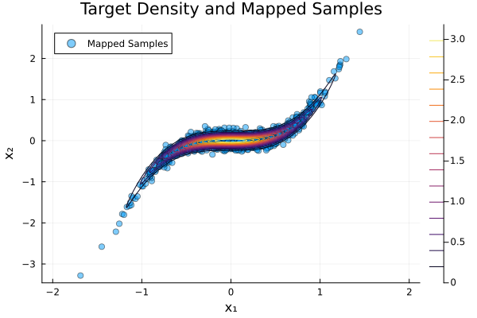
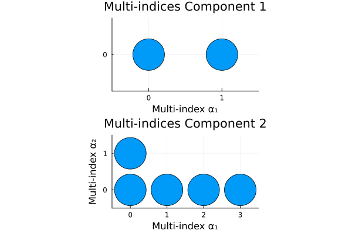

Cubic: Adaptive Transport Map from Density
This example demonstrates the adaptive map construction from a given density $\pi(x)$. The target is given by the unnormalized joint density
\[p(x) = \phi(x_1) \cdot \phi(x_2 - x_1^3).\]
This density is similar to the banana density, however, it has a cubic instead of a quadratic term in the second term of the product.
Key Differences from Sample-Based ATM
Unlike the sample-based adaptive transport map approach (see Banana: Adaptive Transport Map from Samples), this method constructs the map directly from the analytical density function without requiring samples. The key differences are:
- Global term budget: Instead of specifying maximum terms per component, we provide a single global budget that is shared across all components. The algorithm decides which component to enrich at each iteration.
- Quadrature-based optimization: Uses numerical integration via quadrature rules rather than empirical sample averages to evaluate the KL divergence.
- Simultaneous enrichment: At each iteration, the algorithm evaluates candidate terms from all components and selects the one with the largest gradient magnitude, leading to a more flexible enrichment strategy.
- No cross-validation: The density-based approach uses a simple train-validation split rather than k-fold cross-validation, making it more computationally efficient.
More information is found in the manual page Adaptive Transport Maps.
We start with loading the necessary packages:
using TransportMaps
using Distributions
using LinearAlgebra
using PlotsDefining the Target Density
We define the log-density function and wrap it in a MapTargetDensity object. The :ad argument indicates that automatic differentiation should be used for computing gradients.
target_density(x) = logpdf(Normal(0, 0.5), x[1]) + logpdf(Normal(0, 0.1), x[2] - x[1]^3)
target = MapTargetDensity(target_density)Choosing a Quadrature Method
For density-based ATM, we need to specify quadrature points and weights for numerical integration. Here, we use Smolyak sparse grid quadrature with level 3 in 2 dimensions, which provides a good balance between accuracy and computational cost.
quadrature = SparseSmolyakWeights(3, 2)SparseSmolyakWeights:
Number of points: 49
Dimensions: 2
Quadrature type: Sparse Smolyak (Gauss-Hermite)
Reference measure: Standard Gaussian
Weight range: [-0.0740253073352043, 0.2440975028949389]
Adaptive Map Construction
We construct the adaptive transport map with a global budget of 10 terms (including the initial constant terms). The algorithm will iteratively add terms to the components that maximize the reduction in KL divergence.
For model selection, we provide validation quadrature points using Latin hypercube sampling. The algorithm returns the map with the best validation KL divergence.
T, hist = optimize_adaptive_transportmap(target, quadrature, 10;
validation = LatinHypercubeWeights(100, 2))
display(hist)Initialized map with 2 initial coefficients.
Initial KL divergence (train): 107.73779227412545
Initial KL divergence (valid): 106.28268388164106
Term 3 / 10
Evaluating 3 candidates...
Best candidate: Component 1, adding term
Gradient magnitude: 255.03292359035316
KL divergence (train): 24.91620254980863
KL divergence (valid): 21.155614067380508
Term 4 / 10
Evaluating 3 candidates...
Best candidate: Component 2, adding term
Gradient magnitude: 33.93601155755286
KL divergence (train): 3.329623966996172
KL divergence (valid): 3.2669294031330285
Term 5 / 10
Evaluating 3 candidates...
Best candidate: Component 2, adding term
Gradient magnitude: 3.9426851026820113
KL divergence (train): 3.2160766301156856
KL divergence (valid): 3.0705041053295257
Term 6 / 10
Evaluating 4 candidates...
Best candidate: Component 2, adding term
Gradient magnitude: 9.226702321032485e-10
KL divergence (train): 3.2160766301156856
KL divergence (valid): 3.0705041053295257
Term 7 / 10
Evaluating 4 candidates...
Best candidate: Component 2, adding term
Gradient magnitude: 4.09144046516957
KL divergence (train): 2.913553432115593
KL divergence (valid): 2.87944787196269
Term 8 / 10
Evaluating 4 candidates...
Best candidate: Component 2, adding term
Gradient magnitude: 2.8357364153180063e-10
KL divergence (train): 2.913553432115593
KL divergence (valid): 2.87944787196269
Term 9 / 10
Evaluating 4 candidates...
Best candidate: Component 2, adding term
Gradient magnitude: 0.9447513910864037
KL divergence (train): 2.8626416695459476
KL divergence (valid): 2.9319080639924033
Term 10 / 10
Evaluating 4 candidates...
Best candidate: Component 1, adding term
Gradient magnitude: 8.11761312797575e-9
KL divergence (train): 2.8626416695459476
KL divergence (valid): 2.9319080639924033
Best iteration: 6
Final KL divergence (train): 2.913553432115593
Final KL divergence (valid): 2.87944787196269The function uses default parameters:
rectifier = Softplus(): Monotonicity-enforcing functionbasis = LinearizedHermiteBasis(): Polynomial basis (Hermite polynomials with linearization)reference_density = Normal(): Reference distribution (standard normal)
Convergence Analysis
The optimization history allows us to analyze the convergence behavior and model selection. We can plot both the training and validation KL divergence over iterations, as well as the maximum gradient magnitude among all candidate terms at each iteration. The gradient plot shows the maximum absolute gradient value among all candidate terms at each iteration. This indicates how much improvement we expect from adding the best term.
convergence_kl = plot(hist.train_objectives, label="Train Objective", xlabel="Iteration",
ylabel="KL divergence", title="Objective Value vs Iteration", marker=:o)
plot!(convergence_kl, hist.test_objectives, label="Test Objective", marker=:o)
yaxis!(:log10)
grad_norms = maximum.(hist.gradients[2:end])
convergence_grad = plot(2:length(hist.gradients), grad_norms; xlabel="Iteration",
ylabel="Maximum Gradient", label=nothing, marker=:o, title="Gradient")
yaxis!(:log10)
xlims!(xlims(convergence_kl))
plot(convergence_kl, convergence_grad, layout=(2, 1))
We observe that:
- The training objective decreases monotonically as expected
- The validation objective reaches a minimum and then may increase, indicating potential overfitting
- The gradient magnitudes decrease over iterations, showing diminishing returns from adding new terms
- The algorithm automatically selects the model with the best validation performance. Here, it is the map fitted at iteration 7.
Generate samples and compare response
samples_z = randn(2000, 2)
mapped_samples = evaluate(T, samples_z)We compare the computed map with the target pdf
x1 = -2:0.01:2
x2 = -2:0.01:2
pdf_val = [pdf(target, [x₁, x₂]) for x₂ in x2, x₁ in x1]
s = scatter(mapped_samples[:, 1], mapped_samples[:, 2],
label="Mapped Samples", alpha=0.5, color=1,
xlabel="x₁", ylabel="x₂", title="Target Density and Mapped Samples")
contour!(x1, x2, pdf_val)
Selected Multi-Index Sets
We can visualize which polynomial terms were selected for each map component. The adaptive algorithm automatically determines the sparsity pattern based on the gradient information, potentially discovering non-trivial interaction structures.
ind_atm = getmultiindexsets(T[1])
MIS1 = scatter(ind_atm[:, 1], zeros(length(ind_atm)), ms=30, legend=false)
plot!(xlims=(-0.5, maximum(ind_atm[:, 1]) + 0.5), ylims=(-0.5, 0.5),
aspect_ratio=1, xlabel="Multi-index α₁", ylabel="", title="Multi-indices Component 1")
xticks!(0:maximum(ind_atm[:, 1]))
yticks!(0:0)
ind_atm = getmultiindexsets(T[2])
MIS2 = scatter(ind_atm[:, 1], ind_atm[:, 2], ms=30, legend=false)
plot!(xlims=(-0.5, maximum(ind_atm[:, 1]) + 0.5), ylims=(-0.5, maximum(ind_atm[:, 2]) + 0.5),
aspect_ratio=1, xlabel="Multi-index α₁", ylabel="Multi-index α₂",
title="Multi-indices Component 2")
xticks!(0:maximum(ind_atm[:, 1]))
yticks!(0:maximum(ind_atm[:, 2]))
plot(MIS1, MIS2, layout=(2, 1))
The selected terms reveal the structure the algorithm discovered:
- Component 1 only contains univariate terms due to the triangular structure, i.e., $T^1(z_1)$
- Component 2 also only contains terms with no-mixed multivariate polynomials. This means, $T^2$ does depend on both $z_1$ and $z_2$, but there are no non-linear interaction terms.
- The adaptive approach avoids unnecessary terms, resulting in a sparse representation. This is shown by the final form which contains 7 terms instead of the maximum possible 10 terms.
This page was generated using Literate.jl.